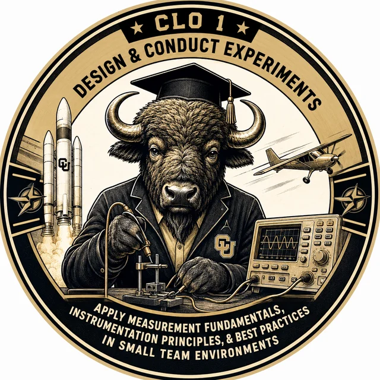

CLO 1 Mastery Badge
Design and conduct experiments
Design and conduct aerospace experiments by applying measurement fundamentals, instrumentation principles, and best practices in small team environments.
What each sub-CLO requires
- CLO1.1 — Design by Applying Measurement Fundamentals
Proficient: Identify the quantity, variables, range, units, procedure, controls, and confounders needed to answer the question.
Mastery: Anticipate how measurement limits and practical constraints affect the claim, then make traceable design tradeoffs. - CLO1.2 — Conduct by Applying Measurement Fundamentals
Proficient: Execute the procedure, record usable measurements with units and context, take justified observations, and identify important variation.
Mastery: Work independently, diagnose anomalies, document decisions, and preserve a record another engineer can reconstruct. - CLO1.3 — Design by Applying Instrumentation Principles
Proficient: Select instrumentation that matches the measurand, range, accuracy, bandwidth, and setup.
Mastery: Compare plausible options against uncertainty, installation effects, risks, and practical constraints. - CLO1.4 — Conduct by Applying Instrumentation Principles
Proficient: Configure and use instruments correctly, interpret their outputs, and apply specifications or calibration information.
Mastery: Diagnose instrument and installation artifacts, compare measurement paths, and justify corrective action. - CLO1.5 — Small-Team Best Practices
Proficient: Prepare, contribute reliably, communicate, maintain records, meet handoffs, and respond to feedback.
Mastery: Anticipate dependencies, resolve technical or coordination problems, improve the team process, and preserve individual accountability.
Major summative assessment opportunities
- Lab 1: Power, Voltage, and the Language of UncertaintyWeeks 2-5
Students conduct a controlled bench experiment using a power supply, resistor, and multimeter while documenting proper measurement practice. The simple circuit keeps the focus on careful execution and defensible measurement records.
- Tier 1: Forward Analysis, Reverse Prediction, and Combined SynthesisWeeks 5-8
Students execute assigned experiments, identify variables and confounders, record measurements with uncertainty, and compare sensor methods. The assignment moves from following a procedure toward disciplined experimental conduct.
- Tier 2: Predict, Execute, Analyze, ImproveWeeks 8-11
Groups prepare, run, and document a more complex aerospace experiment under practical lab constraints. They must record calibration status, anomalies, setup decisions, and evidence while the experiment is happening.
- Final Lab: Paper Experimental Design and V&V PlanWeeks 12-15
Students design a feasible experiment with variables, controls, confounding factors, safety considerations, and a bounded test matrix. The assignment evaluates whether their planned procedure could be executed by an engineering team.